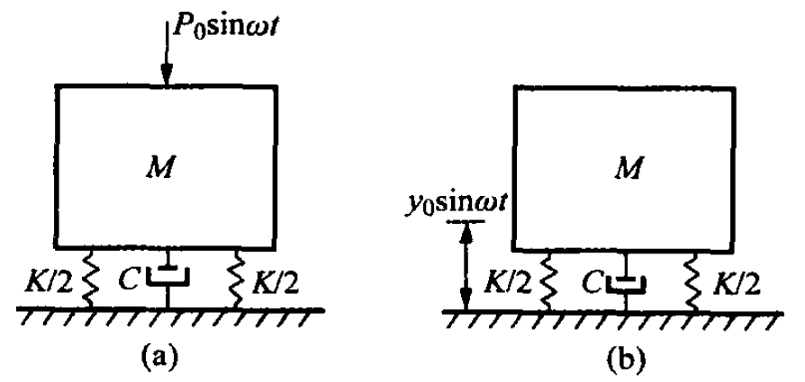

1.6. 隔振原理#
1.6.1. 第一类隔振#
在船上有各种隔振，如主机、辅机等，它们在运转时所产生的干扰力会引起船体结构的振动。为了减少这些干扰力对船体的作用，通常在这些机械装置和船体结构之间装上一种称为减振器的隔振装置。它由弹性元件和阻尼元件组成。适当地选择减振器的弹簧常数和阻尼系数可使传递至船体结构的干扰力大为减小，这种隔振是把振源的干扰力和船体结构相隔离开，有时，称为第一类隔振，或简称为隔力。Fig. 1.23(a)是这种隔振的示意图。
{kind=link}

Fig. 1.23 隔振示意图#
对于第一类隔振，传递到基础的力是弹簧力和阻尼力之和，若采用复数解法，则传递力为
如果激励力是简谐的，\(P\left ( t \right ) = P_{0}\sin \omega t\)，则
其稳态振动的解为
式中，
于是，通过弹簧和阻尼器传递到基础上的力为
式中，\(\bar{F_{t} }\)为传递力的复数形式的幅值。于是传递力与激励力的复数幅值比
由此，可求得传递力与激励力振幅值比（又称力传递函数）及相位差
显然，它与1.6.1节中位移传递函数\(H_{1} \left ( \omega \right ) \)是相同的。由Fig. 1.16可见，当\(r = \sqrt{2} \)时，\(H_{F} \left ( \omega \right )=1 \)；当\(r> \sqrt{2}\)时，\(H_{F} \left ( \omega \right )< 1\)，即引起隔振的效果，\(r\)越大，\(H_{F} \left ( \omega \right )\)越小，隔振效果越好。但\(r\)过大意味着\(\omega _{n}\)很小。这就造成隔振系统静伸长很大。在有外界低频骚扰时，往往会使动力机械不能正常工作。从Fig. 1.16还可看出当\(r > \sqrt{2}\)时，阻尼增大反而使隔振的效果降低。因而隔振器的阻尼比不能设计得太大。
1.6.2. 交互探索：第一类隔振如何减少传递力？#
Tip
第一类隔振关注的是振源产生的干扰力有多少传递给基础。只有当频率比 \(r>\sqrt{2}\) 时，传递率才小于 1，系统才真正进入隔振区。
请调节频率比 \(r=\omega/\omega_n\) 和阻尼比 \(\zeta\)，观察机器振动、传递力箭头和力传递率曲线的变化。
1.6.3. 第二类隔振#
为了把某些经不起振动的精密仪器等与船舶舱室内振动的环境隔离开来，使其受不到周围剧烈环境振动的影响，往往在这些仪器和固定它们的基础（如船体或船上的舱室）之间也要安装弹性隔振装置，有时这种隔振装置称第二类隔振，或简称隔幅，即隔去基础振幅之意。Fig. 1.23(b)是此种隔振的示意图。
对于第二类隔振，要求将被隔物体，即振动系统中质量\(M\)与外界基础或支座的振动隔离开，使被隔离的物体在空间保持静止状态。因此，人们关心的是其绝对位移的响应，其绝对位移传递函数的幅值及相位差同样可由式(1.88)和式(1.87)给出，与力的传递函数式(1.134)和(1.135)相同，因而隔振效果的结论也如第一类隔振所述。
隔振效果通常用隔振效率\(\eta \)表示，\(\eta= \left [ 1- H_{F} \left ( \omega \right ) \right ]\times100\%\)。
由于实际的减振器阻尼比不大，故可近似地取\(\zeta = 0 \)时的\(H_{F} \left ( \omega \right )\)
式中，\(f=\frac{\omega}{2\pi}\)为隔振系统的输入频率；\(\delta _{st}=\frac{Mg}{K}\)为隔振系统的静伸长。
1.6.4. 交互探索：第二类隔振如何减少设备绝对位移？#
Tip
第二类隔振关注的是基础振动传到被隔物体上的位移。低频时设备几乎随基础一起运动；高频且 \(r>\sqrt{2}\) 时，设备绝对位移显著小于基础位移。
请调节频率比 \(r=\omega/\omega_n\) 和阻尼比 \(\zeta\)，观察基础位移、设备绝对位移、位移传递率以及隔振效率的变化。